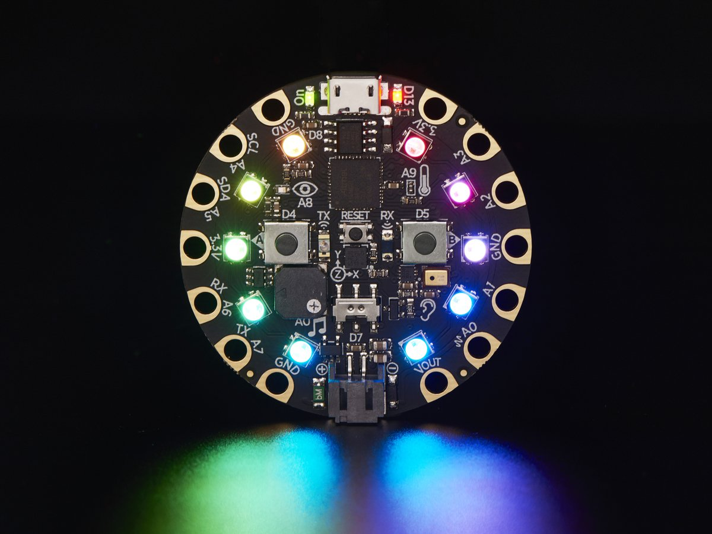

An Installation And User's Guide For
pymata-cpx and FirmataCPx
Remotely Monitor And Control
An Adafruit Circuit Playground Express
Using Python

The pymata-cpx library implements a Python 3 compatible API that makes controlling and monitoring an Adafruit Circuit Playground Express simple and fun to do.
This package includes the pymata-cpx client library, as well as the FirmataCPx firmware that runs on the Playground express.
The pymata-cpx/FirmataCPx combination supports the following Playground Express on-board sensors and actuators:
- The Buttons and Slide Switch
- The D13 Board LED.
- The 10 onboard neo-pixels.
- Tone generation using the onboard speaker.
- The accelerometer, including tap sensing.
- The temperature sensor.
- The light sensor.
- The sound sensor.
- The 7 Touchpad sensors.
A full set of examples is included demonstrating all of the sensors and actuators listed above.
Last updated 30 December 2019
Copyright (C) 2019 Alan Yorinks. All Rights Reserved.